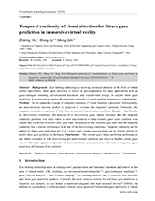

Activities
Commissary in charge of publicity, class 1 of Opto13, Sep 2015 ~ Jul 2017
President of association, learning pioneer association of Beijing Institute of Technology, Sep 2014 ~ Jul 2015
Research Projects
FixationNet, 2020
The goal of this research is to forecast users' eye fixations in task-oriented virtual environments. Towards this goal, users' fixation data in a visual search task are collected and statistical analysis is performed to reveal the characteristics of the fixation data. A learning-based model is proposed to forecast users' fixations in the near future. In this research, I am responsible for experimental design, data collection and analysis, model design and implementation, and paper writing.Homepage: cranehzm.github.io/FixationNet
DGaze, 2019~2020
This project focuses on gaze analysis and prediction in dynamic virtual scenes. For this purpose, participants' eye tracking data in dynamic scenes are recorded and a dataset is built. Statistical analysis is performed to analyze users' gaze behaviors. A CNN-based model is derived for predicting gaze positions in dynamic scenes. My contribution to this research lies in experimental design, data collection, statistical analysis, model design and implementation, and paper writing.Homepage: cranehzm.github.io/DGaze
SGaze, 2018~2019
This project aims at analyzing and predicting users' realtime gaze positions in static virtual scenes. To this end, users' gaze data in static scenes are collected and correlation analysis is performed to reveal the correlations between gaze positions and other factors. A data-driven eye-head coordination model is proposed for realtime gaze prediction. In this project, I am in charge of experimental design, data collection, data analysis, mathematical modeling and implementation, and paper writing.Homepage: cranehzm.github.io/SGaze
Selected Publications
 FixationNet: Forecasting Eye Fixations in Task-Oriented Virtual Environments
FixationNet: Forecasting Eye Fixations in Task-Oriented Virtual Environments
Zhiming Hu,
Andreas Bulling, Sheng Li, Guoping Wang
IEEE Transactions on Visualization and Computer Graphics (Conditionally Accepted), 2021
 DGaze: CNN-Based Gaze Prediction in Dynamic Scenes
DGaze: CNN-Based Gaze Prediction in Dynamic Scenes
Zhiming Hu,
Sheng Li, Congyi Zhang, Kangrui Yi, Guoping Wang, Dinesh Manocha
IEEE Transactions on Visualization and Computer Graphics, 2020

Temporal continuity of visual attention for future gaze prediction in immersive virtual reality
Zhiming Hu,
Sheng Li, Meng Gai
Virtual Reality & Intelligent Hardware, 2020
 SGaze: A Data-Driven Eye-Head Coordination Model for Realtime Gaze Prediction
SGaze: A Data-Driven Eye-Head Coordination Model for Realtime Gaze Prediction
Zhiming Hu,
Congyi Zhang, Sheng Li, Guoping Wang, Dinesh Manocha
IEEE Transactions on Visualization and Computer Graphics, 2019
A full list of publications can be found on Google Scholar or the Homepage.
Last modified: 2020/11/08